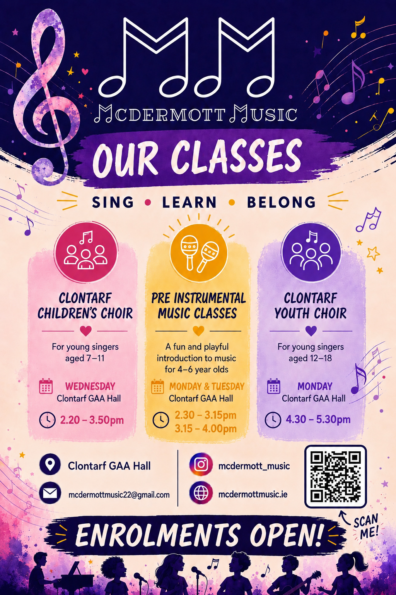

Clontarf Children’s Choir / Pre Instrumental Music
McDermott Music is a vibrant music education programme based in Clontarf, Dublin, offering engaging, high-quality classes for children of all ages. Founded by qualified primary teacher and music educator Lauraine McDermott , McDermott Music provides Kodály-inspired early years music classes, the Clontarf Children’s Choir (ages 7–12) and the Clontarf Youth Choir (ages 12–18). At the heart of McDermott Music is the belief that every child deserves the opportunity to experience the joy of music in a welcoming, supportive environment. There are no auditions- just a focus on building confidence, developing musicianship, creating lasting friendships and fostering a lifelong love of music. Through inspiring performances, exciting collaborations and a strong sense of community, children grow not only as musicians but as confident, creative young people. Sing. Learn. Belong.
View on Google Maps →